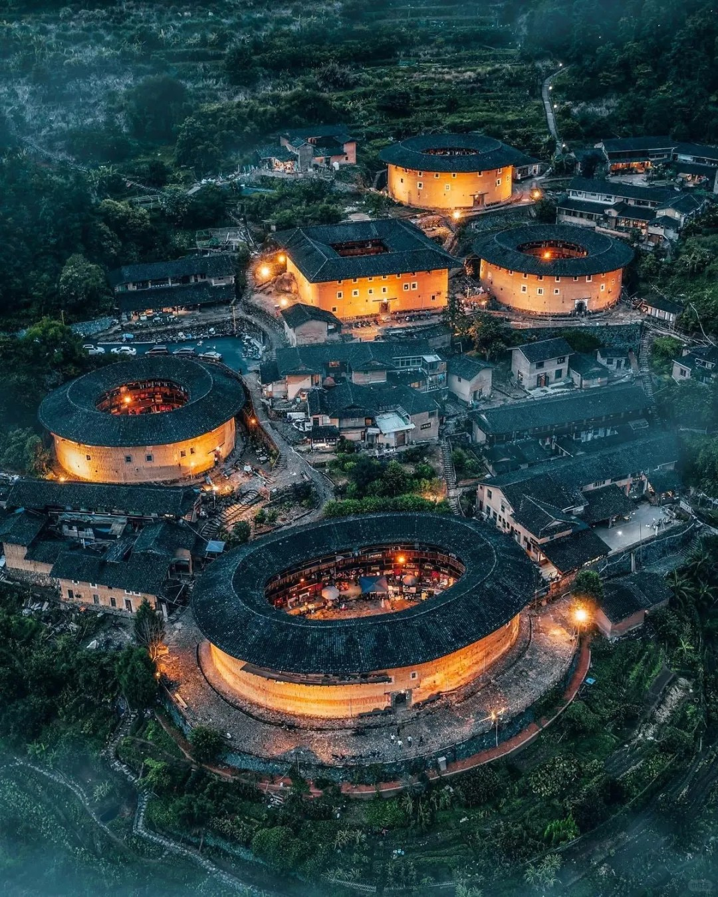
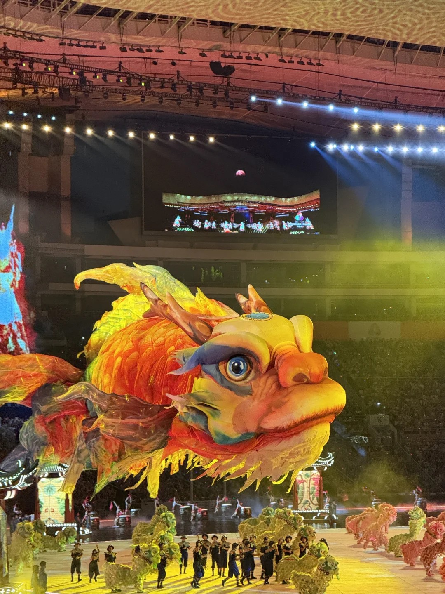

Discover the profound roots and traditions that survived the rapid urbanization.

Shenzhen was historically a major settlement for the Hakka people. Their monumental Walled Villages (Weilongwu) stand as defensive forts and communal living spaces all in one. These structures tell stories of unity, ancestral worship, and a deep-rooted clan culture that dates back centuries.
Wandering into Longgang or Pingshan districts, you can still find these magnificent earth and stone compounds perfectly preserved amidst modern skyscrapers.

Originating in Shatoujiao, the Fish Lantern Dance is an age-old tradition originally performed by fishermen to pray for safety and a bountiful catch. Dancers hold intricately handcrafted paper fish illuminated from within, mimicking fish swimming through the dark ocean surface—a mesmerizing sight to behold.
"Yum Cha" (drinking tea) is the cornerstone of Lingnan social life. In the old streets of Shenzhen, historic tea houses continue the morning ritual of serving delicate dim sum and premium local teas. It's not just a breakfast; it's a social space where locals gather to read papers, chat, and relax.
"To understand a city's future, one must slow down and listen to the silent whispers of its past hidden within the old walls."